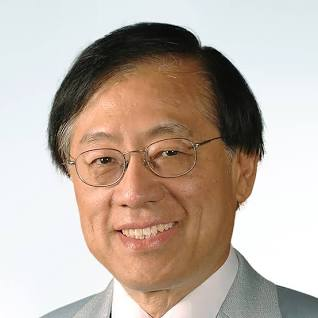

Andrew Chi-Chih Yao

Qoute from Andrew Chi Chih Yao:
"You see things; and you say, 'Why?' But I dream things that never were; and I say, 'Why not?’”
Fact about Andrew CHi Chih Yao:
Andrew Chi-Chih Yao (Chinese: 姚期智; pinyin: Yáo Qīzhì);was born in Shanghai, China, on December 24, 1946. is a
Chinese computer scientist and computational theorist.
He is currently a professor and the dean of Institute for Interdisciplinary Information Sciences (IIIS) at
Tsinghua University. Yao used the minimax theorem to prove
what is now known as Yao's principle. After moving with is family to Hong Kong for two years he immigrated to
Taiwan.
Andrew Chi-Chih Yao received a BS in Physics from National Taiwan University, a PhD in Physics from Harvard
University,
and a PhD in Computer Science from the University of Illinois.
Yao was born in Shanghai, China. He completed his undergraduate education in physics at the National Taiwan
University,
before completing a Doctor of Philosophy in physics at Harvard University in 1972, and then a second PhD in
computer
science from the University of Illinois at Urbana-Champaign in 1975.
Yao was an assistant professor at Massachusetts Institute of Technology (1975-1976), assistant professor at
Stanford
University (1976-1981), and professor at the University of California, Berkeley (1981-1982).From 1982 to 1986, he
was a full professor at Stanford University,
From 1986 to 2004, Yao was the William and Edna Macaleer Professor of Engineering and Applied Science at Princeton
University,where he continued to work on algorithms and complexity.
In 2004, Yao became a professor of the Center for Advanced Study, Tsinghua University (CASTU) and the director of
the
Institute for Theoretical Computer Science (ITCS), Tsinghua University in Beijing. Since 2010, he has served as
the Dean
of Institute for Interdisciplinary Information Sciences (IIIS) in Tsinghua University. In 2010, he initiated the
Conference on Innovations in Theoretical Computer Science (ITCS). Yao is also the Distinguished Professor-at-Large
in
the Chinese University of Hong Kong
In 1996, Yao was awarded the Knuth Prize. Yao also received the Turing Award in 2000, one of the most prestigious
awards
in computer science, "in recognition of his fundamental contributions to the theory of computation, including the
complexity-based theory of pseudorandom number generation, cryptography, and communication complexity".
In 2021, Yao received the Kyoto Prize in Advanced Technology.
Yao is a member of U.S. National Academy of Sciences, a fellow of the American Academy of Arts and Sciences, a
fellow of
the American Association for the Advancement of Science, a fellow of the Association for Computing Machinery, and
an
academician of Chinese Academy of Sciences. His wife, Frances Yao, is also a theoretical computer scientist.
Yao received a bachelor's degree (1967) in physics from the National Taiwan University, a master's degree (1969)
in
physics and a doctorate (1972) in physics from Harvard University, and a doctorate (1975) in computer science from
the
University of Illinois. After finishing his studies, Yao taught at the Massachusetts Institute of Technology
(1975-76),
Stanford University (1976-81; 1982-86), the University of California, Berkeley (1981-82), Princeton University
(1986-2004), Tsinghua University,
Beijing (2004 ), where he is the director of the Institute for Theoretical Computer Science, and the Chinese
University of Hong Kong (2005 ).
Yao was the managing editor of the Society of Industrial and Applied Mathematics (SIAM) Journal on Computing
(1989-91), the advisory
editor of the Journal of Combinatorial Optimization (1997 ), and the associate editor in chief of the Journal of
Software (2001 ).
He served on the editorial boards of the Journal of Algorithms (1980-91), the SIAM Journal on Computing (1981-87),
the
Journal of the Association for Computing Machinery (1982-83), Information and Control (1982-85), Algorithmica
(1985),
Random Structures & Algorithms (1990-2002), the Journal of Cryptology (1991-96), and the International Journal of
Foundations of Computer Science (1994 ).
Andrew Chi-Chih Yao created new trends in computer science and made a great contribution to cutting-edge research
in
various areas, especially in security, secure computing, and quantum computation through establishing innovative
fundamental theories for computation and communication. His achievements are continuing to influence current
real-world problems such as security, secure computing, and big data processing.